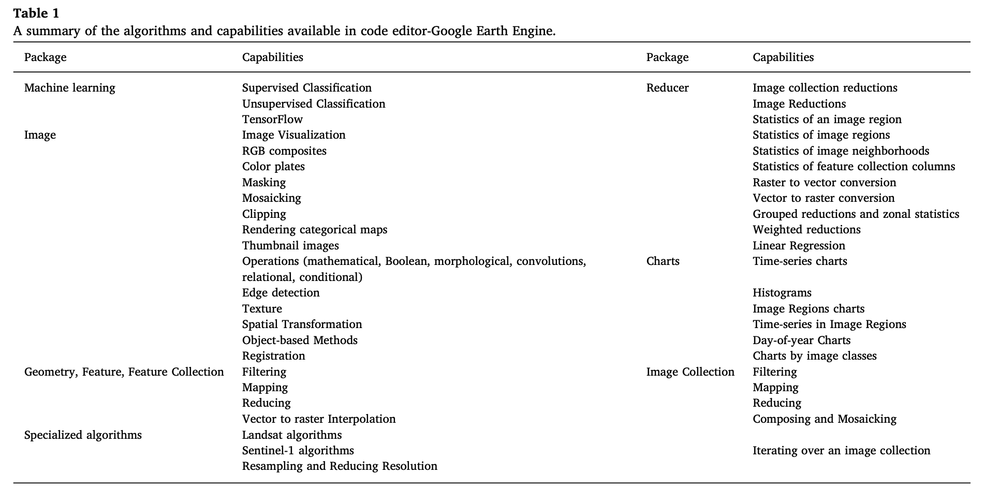

5 GEE
5.1 Summary
5.1.1 What’s GEE?
it uses Javascript, which is website programming language, variables are defined by
varit allows massive datasets for quickly planetary scale analysis.
in GEE, image refers to raster, feature refers to vector,
ImageCollectionrefers to image stack, andFeatureCollectionrefers to feature stack(lots of polygons)code runs on the client side, which is the browser, while the data is stored on the server side(
ee)
5.1.2 Why GEE?
Scale: The scale is set by the output instead of input.
- When doing analysis, GEE would aggregate the image to fit a 256*256 grid, and they would also select the pyramid with the closest scale and resample using nearest neighbor by default.
Projection: This is what we don’t need to worry about in GEE. It converts all data into Mercator projection when displaying
5.1.3 The Usages of GEE
5.1.3.1 Building Blocks
objects: vector, raster, feature, string, number
each belongs to a class
each class has specific GEE functions/methods
geometry: point/line/(multi)polygon without attributes
feature: geometry with attributes
- feature collection: multiple features with attributes
5.1.3.2 Typical processes
geometry operations: joins, zonal statistics, filtering of images or specific values
methods: machine learning, supervised and unsupervised classification, etc.
applications/outputs: online charts, scalable geospatial applications with GEE
Instances:
Reducing images: reduce the collection to the extreme values for each pixel(
collection.reduce(ee.Reducer()))By region: most useful for zonal statistics(
reduceRegion(), image.reduceRegions())By neibourhood: a window of pixels surrounding a central pixel
Linear regression: see the change over time in pixel values(
linearFit())Joins: first put image collections or feature collections in a filter(
ee.Filter), then join withjoin.apply().
5.2 Application
In addition to a large repository of raw remotely sensed imagery, the GEE data catalog also offers preprocessed, mosaic images that have been processed to remove clouds. Table 1, as listed by Tamiminia et al. (2020a), provides a more comprehensive overview of the capabilities of packages in the GEE platform, I think, which would be enlightening for us to explore. Still, I believe that the most effective way of learning these things would be open the browser and look for the GEE APIs. And try to write your own code with interesting datasets.

They reviewed 349 papers used GEE in a wide variety of remote sensing applications, and categorized them into 11 different groups(shown in Figure below). Different values in the gear show the number of papers in related areas. It has shown that most studies are on crop mapping, including vegetation, rice paddy, and agricultural monitoring. This is followed by studies on water, land cover/land use, and disaster. The least number of studies are on data processing.
It is interesting to note that they also categorized all studies into two groups based on the type of data used: remote sensing data and ready-to-use products(such as NDVI and land cover). These two main categories were further subdivided into smaller categories(shown in Figure below) based on the methods. The most used methods are machine learning, while a small part of research focus on time-series analysis, feature extraction, image composite-visual interpretation and image pre-processing.
In machine learning, classification, clustering, regression and dimension deduction are four main algorithms(Holloway and Mengersen 2018). While in the papers Tamiminia et al. (2020b) investigated, they find that in GEE application classification and regression are the most popular machine learning algorithms in remote sensing. In detail, DT, CART, KNN, non-linear SVM, RF, and ANN are the most often-use non-parametric classification algorithms. In the category of others, time-series analysis, feature extraction, image composite-visual interpretation and image processing were applied to satellite images.
Even GEE is powerful for geospatial and big data analysis, it has several limitations. Firstly, despite it has an extensive archive of satellite images, it has limited historical and high-resolution data. Notably, it could be challenging to implement new algorithms. For instance, Deep Learning has becoming extensively used in image classification. However, DL algorithms are not yet supported directly by GEE. The open-source framework like Tensorflow has been an important way of using DL in GEE.
5.3 Reflection
As shown in practical, GEE though powerful in computation, it becomes quite complex and verbose when doing some simple task like masking in R or QGIS. It seems that GEE is better suited for image analysis compared to vector-based processing.